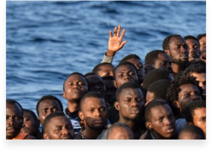

About MMDP
The Edo State Government, in a bid to eradicate illegal migration and promote economic prosperity and safety for its citizens have designed the ‘Managing Migration through Development’ programme. The objective of this programme is set against four thematic pillars which aligns with the Edo State overall development strategic plan. The interventions articulated in this document have been designed through collaborative efforts and wide consultations with local and international bodies. Alongside the ongoing response of the State Government to the issues that have prompted this programme, we welcome input, partnerships and support in order to make the desired programme outcome a reality for the people of Edo State so as to effectively eradicate Illegal migration and human trafficking in Edo State.


Background
The challenge of irregular migration and trafficking involving Nigerians as victims and traffickers is not a new phenomenon. Nigeria is a source, transit and destination for irregular migrants and human trafficking. Recent international reports show an upswing in the number of men, women and children being trafficked for sexual exploitation and forced labour. The most likely destinations for irregular migrants from Nigeria are countries in Europe. Edo State accounts for the highest proportion of known Nigerian irregular migrants. Recent figures showed that over 60% of returnees from Libya are from Edo State. While trends in profiles of migrants are likely to vary over time, current data regarding irregular migrants, drawn from the over 3000 returnees from Libya (Received by the Edo State Taskforce Against Human Trafficking, as at March, 2018) indicates that Edo males significantly dominates the number of irregular migrant returnees. Most of the returnees are in the youth age bracket seeking decent jobs and economic prosperity that they cannot find back home in Edo State. In terms of educational attainment, over 61% of the returnees have completed Senior Secondary Education (SSCE) which means they can pursue technical skills training and can be assisted to find jobs, establish small businesses or supported to pursue migration opportunities through legal channels. The data shows that over 80% of the returnees were independent migrants that left the country on their own (without being trafficked), while about 18% were recruited by a sponsor and only about 2% migrated for other reasons. Most of the returnees cite economic reasons, family pressure and lack of jobs as the key reasons influencing their decision to migrate illegally. Data collected from the returnees presents an empirical case for what we should know about irregular migration and human trafficking in a major hub like Edo State and what we need to be doing to mitigate it.